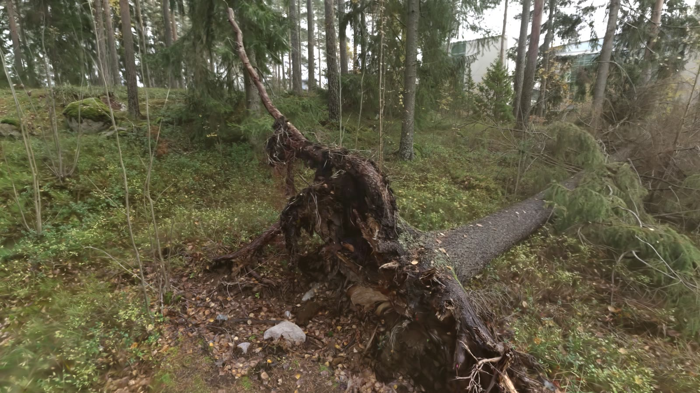
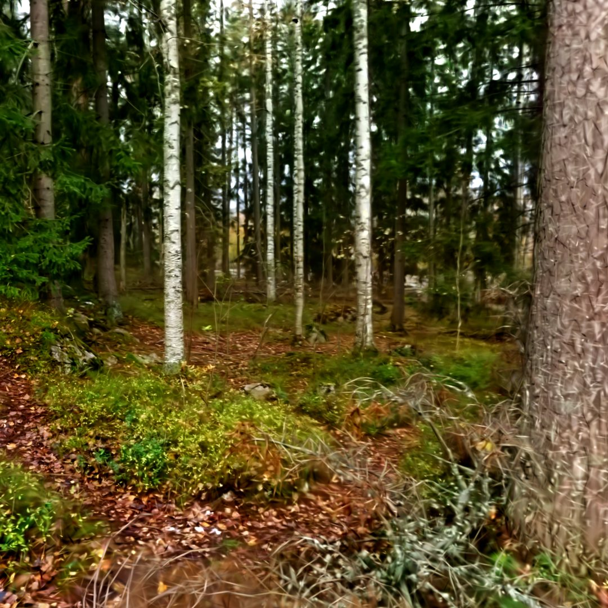
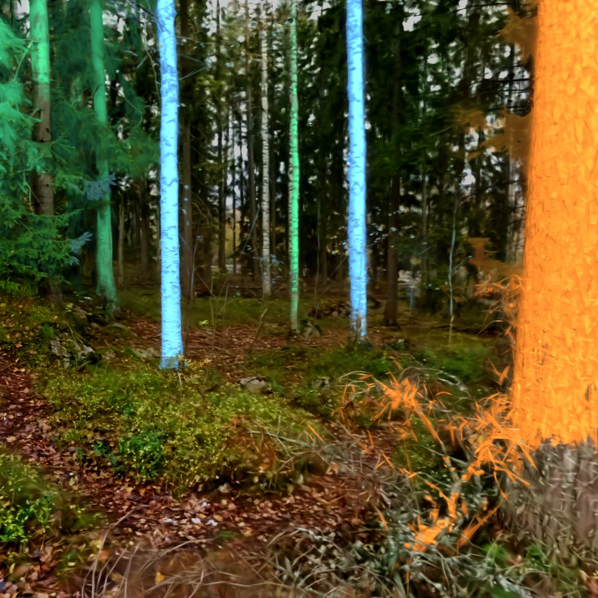
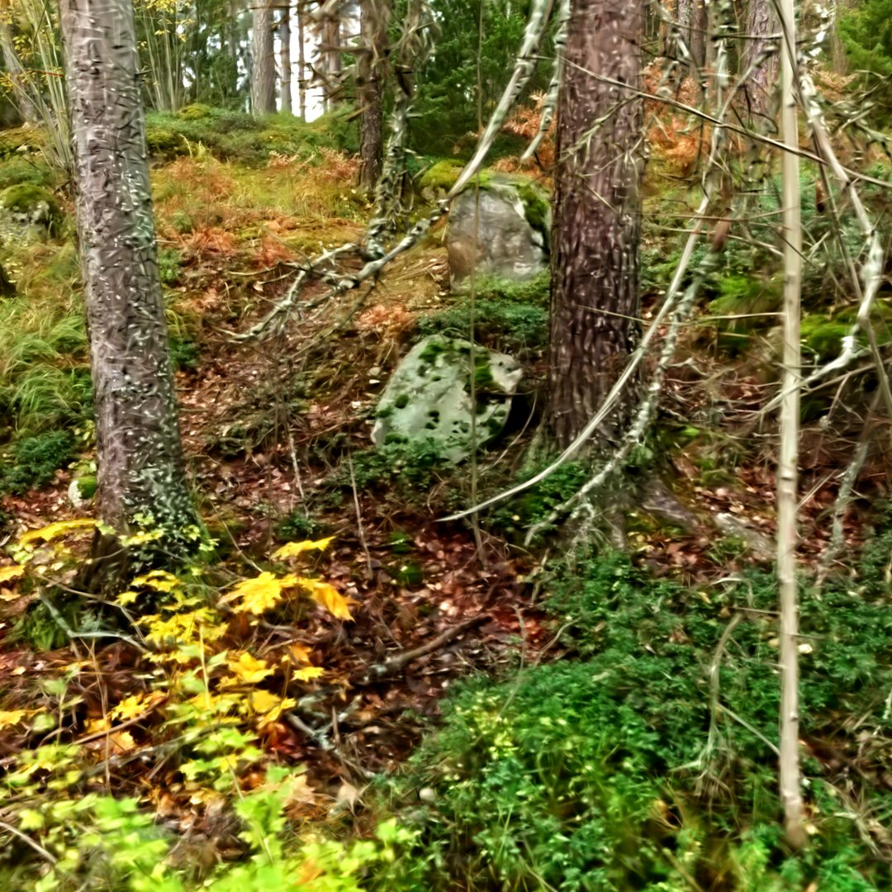
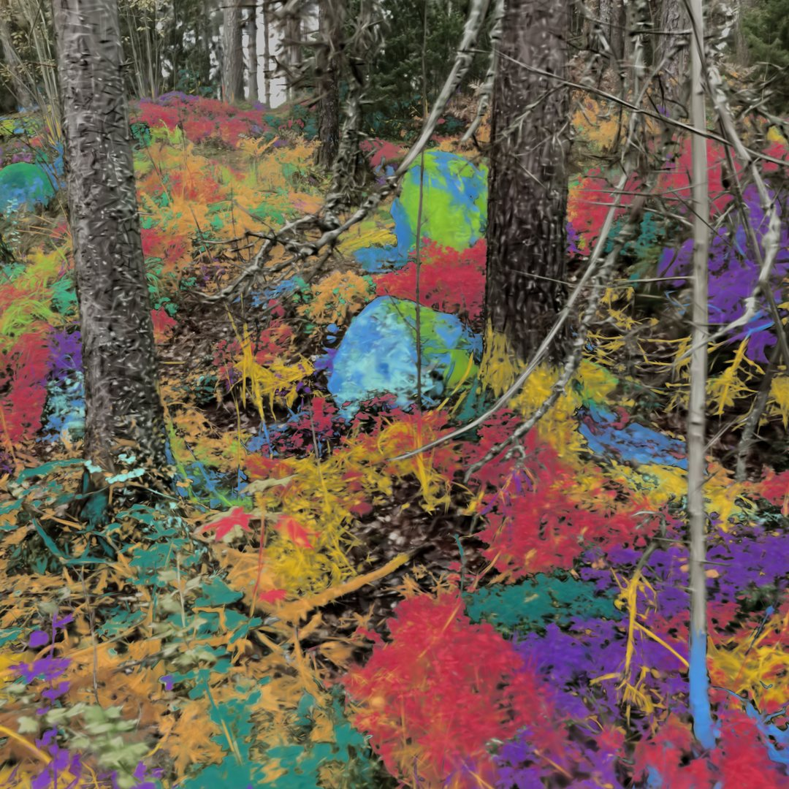
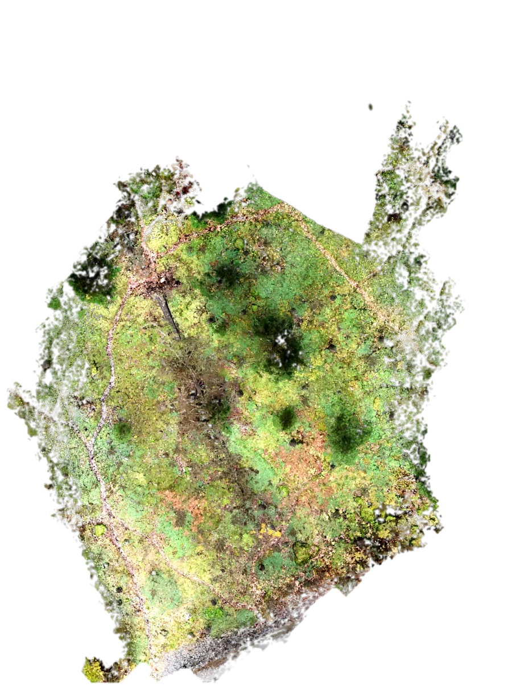

Photorealistic forest maps from a consumer 360° camera
Gaussian-splat reconstructions of real forests from a consumer 360° camera alone — no LiDAR, no GNSS needed — placed on the national map, labelled with tree species and ground cover, built while the scan is still running, and used as worlds for drone simulation.
A whole forest stand from one 360° camera walk
A 22-minute walk with a consumer 360° camera through a forest stand on the Hervanta campus in Tampere — no LiDAR, and no GNSS needed to place it on the map. The result is a photorealistic, georeferenced model of the stand with 29.2 million Gaussians.
- Walk
- 1.02 km 22 min
- Camera
- one 360° Insta360 ONE RS 1-Inch
- Gaussians
- 29.2 M
- Held-out PSNR
- 19.75 dB 312 unseen photos
On the national map
The model sits in the Finnish national grid. The walls the splat saw (yellow) and the walls of a LiDAR scan of the same site (cyan, reference) fall on the outline of the Tietotalo building on the National Land Survey basic map (purple).


- Walls in the splat
- Walls in the backpack LiDAR (reference)
- NLS basic map: building footprint
Placed on the map without GNSS
The same stand placed with no satellite receiver in the loop: its tree stems and its ground surface were matched to the National Land Survey's free airborne laser scan. The two matches share nothing but the model and agree to 0.13 m — and both put the stand 1.25 m from where the phone's GNSS had placed it.
- Two independent matches
- 0.13 m apart
- Phone GNSS was off by
- 1.25 m
- Ground match
- ±0.08 m ±0.11°

Left: the stand's 188 stems (orange) on the national laser scan's tree tops (grey), matched from no prior. Right: where it landed. The precisions are relative to the national scan, whose own stated planimetric accuracy is 0.6 m.
Map layers from the splat
Tree stems and the ground under the vegetation, read from the splat: well-observed stems within 4–5 cm and the bare earth within 11 cm of a LiDAR survey (medians). Clips from an earlier 5.1 M-Gaussian model of the stand.
Trunk segmentation
Stems identified in the splat in orange, the rest of the forest in grey.
Full video ↗Bare earth, LiDAR reference
The ground under the vegetation from the LiDAR survey, coloured by micro-relief and drawn inside the splat.
Full video ↗Ground terrain
Paths, hollows and boulders show in the terrain under the trees, coloured by micro-relief.
Full video ↗Ground-level detail
A 4.4-minute walk around a mossy rock with the same consumer 360° camera. Lichen on the stone, moss, fallen birch leaves, twigs and roots stay sharp from half a metre away.
- Capture
- 264 s one walk
- Gaussians
- 10 M
- Held-out PSNR
- 20.44 dB 363 unseen photos
Against Varjo Teleport, same recording
We gave Varjo Teleport the same 360° video, all 264 seconds of it. Both splats fly the same camera path.
Left: ours. Right: Varjo Teleport. Same camera path.
Top: ours. Bottom: Varjo Teleport. Same camera path.
- Ours
- 20.44 dB SSIM 0.707 · LPIPS 0.290
- Varjo Teleport
- 15.88 dB SSIM 0.460 · LPIPS 0.519
- Gaussians
- 10 M vs 2.3 M in Teleport's export, cap set at 4 M
PSNR on the same 363 held-out photos, people excluded. Teleport trained on every frame of the video, the held-out ones included. Its Gaussian cap was set at 4 M, its default, and it stopped at 2.3 M.
Teleport with its own app
An earlier capture of the same site made with the Teleport app on an iPhone 15 Pro, shown in Teleport's own viewer. It is a different recording, so it has no score on our held-out photos.
Combining different cameras
A 12-minute walk with a consumer 360° camera and an action camera through 44 × 44 m of forest with fallen dead wood. The model keeps the upturned root plate, the trunk lying across the slope and the forest floor around it.
- Capture
- 12 min one walk, two cameras
- Gaussians
- 30 M
- Area
- 44 × 44 m

Two minutes around the tree: a high overview first, then down to the root plate, along the trunk and over the ground. Watch on YouTube ↗
What grows where: tree species and ground cover
Every Gaussian in the model carries a label: the species of the tree it belongs to and, on the ground, what covers it. The labels come from the photos of the same walk, with no LiDAR. Drag the line to compare the model with its labels.
- Trunks with a species
- 83 of 91 the rest left unnamed, not guessed
- Checked trunks named right
- 81 of 81 two plots · pine, spruce, birch
- Ground-cover types
- 18


3D modelTree speciesTree species on every trunk
- Scots pine
- Norway spruce
- birch
- aspen
Spruces on the left, birches in the middle, a large pine on the right. Each trunk takes its tree's species from base to top. A render of the model, not a photograph.


3D modelGround coverWhat covers the forest floor
- rock
- moss
- lingonberry
- bilberry
- leaf litter
- dead wood
A mossy boulder among lingonberry and bilberry, seen from above. An early layer with 18 types in all; about two in three patches were named right in a blind check.
The plot as a map
The same walk, laid out as map layers: the forest floor seen from above, the height of the bare earth, its hollows and hummocks, what covers the ground and how tall the canopy is, with every tree and the contours on top. Switch layers, and point at the map to read the values.

Forest floor
The forest floor seen from straight above, with the trees taken away: a render of the 3D model's ground, low vegetation, rocks, stumps and fallen logs.
Bare-earth height
The ground under the vegetation, 6.5 m of fall across the plot, shaded from the north-west.
Micro-relief
The bare earth minus its 2 m surroundings: the hollows and hummocks a machine feels.
Ground cover
What covers the ground in each 25 cm cell.
- dwarf shrubs
- moss and lichen
- grass, herbs, ferns, saplings
- leaf and needle litter, bare soil
- dead wood
- rock
Canopy height
The height of the trees above the bare earth, read from the same 3D model.
Trees
- pine 31
- spruce 24
- birch 23
- aspen, other broadleaf 5
- not named 8
Size follows the trunk diameter. Click a tree for its photo.
At the pointer
Move over the map, or tap it. Heights are above the plot's lowest ground.
- Ground height
- –
- Micro-relief
- –
- Ground cover
- –
- Canopy
- –
All layers come from the camera walk, with no LiDAR. Heights are above the lowest ground of the plot; the bare earth is the top of the moss and litter that the camera sees, 1–10 cm above the soil. Ground exists where the walk saw it. Species checks are against labels set by eye from close-up photos, not a field inventory.
Splats that build while you scan
The splat trains while the scan is still running, instead of after it.
Office room, LiDAR + 360° live stream ×10
143 s around one room. 29.1 dB on held-out views 8.2 minutes after the first image. The rig and people are masked out. Replayed from the recorded log at capture speed.
A 578 m walk, office to forest ×30
A 10-minute walk from an office through a street into forest. Training starts 1 min 18 s after the first image and ends at 20.1 dB on held-out views.
Flying inside the reconstructed forest
The hv22 reconstruction becomes a world for drone simulation.
High-speed crash into a real trunk real speed
After a smooth curve through the forest, a 10 m/s dash clips a reconstructed tree trunk. The motors cut and the drone tumbles onto the terrain. Real physics, not an animation.
- Impact speed
- 9.3 m/s
- Peak spin
- 22 rad/s
- At rest after
- 1.7 s
Autonomous survey, mapped live ×3
Flown 2 m above the ground at 1.8 m/s with the LiDAR map built live (right). 373 m flown, 0.22 m path error (RMSE), never closer than 0.55 m to a trunk.
Autonomous exploration and inspection
Drones that decide by themselves where to fly and where to look next.
A drone surveys a snowy forest by itself ×1.33
Autonomous flight between the trunks of a simulated snowy forest: the drone picks its next goal, plans the path and builds its map as it flies. Left: a chase camera. Right: the map and the planned path. Work by Sasanka Kuruppu Arachchige ↗, Tampere University.
A Tello explores a building by itself ×6
A simulated DJI Tello explores an unknown building for 10 minutes, with depth from its own camera. 56 % of the floor seen, 0 collisions.
CV


Research assistant in the Computer Vision Group at Tampere University. Before that, a data scientist in industry: fraud detection, maps and machine translation.